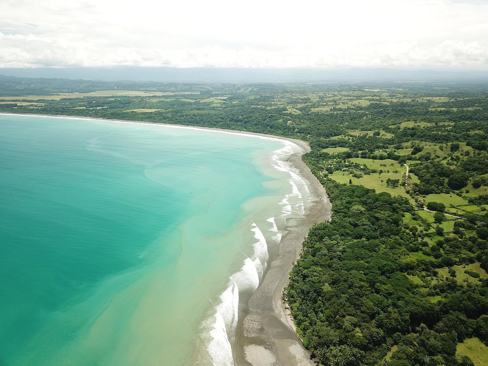

Pavones
Costa Rica · surf

Une gauche de galets réputée pour sa longueur : par bonne houle du sud, une seule vague peut durer plus d’une minute.
- Lieu
- Costa Rica
- Niveau
- Intermédiaire
- Activités
- surf
- Type d'eau
- Mer / océan
- Coordonnées
- 8.40, -83.13 (position approximative du secteur)
Dangers à connaître
- Fond de galets roulants à l’entrée.
- Courant qui pousse vers l’embouchure de la rivière.
- Village isolé, accès long par la route.
Le conseil d'Ocean Buddy
Marche jusqu’au haut de la pointe et rentre à pied : ramer contre le courant t’épuisera.
Ouvrir dans Ocean Buddy Télécharger sur l'App Store
Source : Description historique Ocean Buddy · vérification externe en attente.